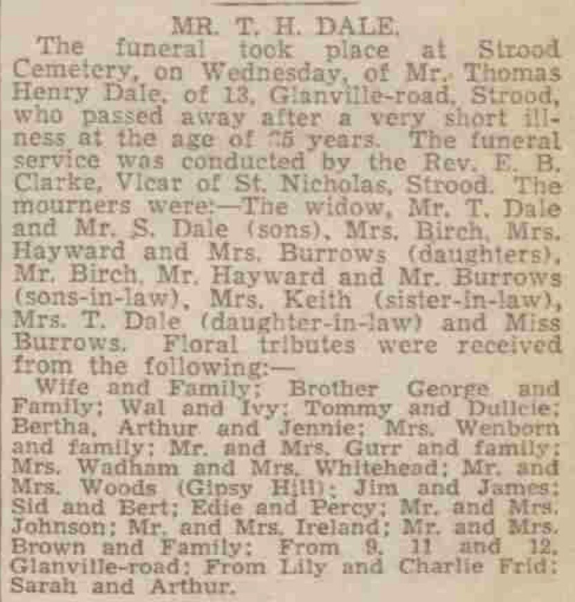
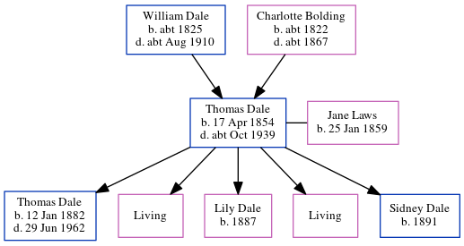

Thomas Henry Dale 1854 - c1939
[ Home ] | [ Calendar ] | [ Surnames Index ] | [ Census Index ] | [ Family History ]A dock yard laborer and the child of William Dale (an agricultural laborer) and Charlotte Bolding, Thomas Dale, the first cousin four-times-removed on the father's side of Nigel Horne, was born in Chartham, Kent, England on Apr 17, 18541,2,3,4, was baptized there at St Mary on May 6, 1854 and married Jane Laws (with whom he had 5 children: Thomas Henry, Bertha Elizabeth, Lily, Hilda May and Sidney Robert, along with 2 surviving children) at All Saints, Frindsbury, Kent, England on Jan 15, 18818.
During his life, he was living at Heath Farm Cottages, Canterbury, Kent on Apr 7, 18611; at Burnt House Farm in Chartham on Apr 2, 187113; at Prentice Street, Strood, Kent on Apr 3, 188112; at Montford Road, Strood, Kent on Apr 5, 18912; on Brompton Lane, Strood, Kent on Mar 31, 190110 and on Apr 2, 191111; and at 13 Glanville Road, Rochester, Kent on Sep 29, 19393 which is where he died c. Oct 19395,6,7. He was buried at Old & Cuxton Road Cemeteries, Strood, Kent in Oct 19399.
Parents
- William was born c. 1825
- Charlotte was born c. 1822
Children
- Thomas Henry was born on Jan 12, 1882
- Lily was born in 1887
- Sidney Robert was born in 1891
Citations
- 1861 England, Wales & Scotland Census - Findmypast (was age 7 and the son of the head of the household)
- 1891 England, Wales & Scotland Census - Findmypast (was age 36 and the head of the household)
- 1939 Register - Findmypast (was the head of the household)
- England & Wales births 1837-2006 - Findmypast
- England & Wales Government Probate Death Index 1858-2019 - Findmypast
- England & Wales deaths 1837-2007 - Findmypast
- England & Wales deaths 1837-2007 - Findmypast
- England Marriages 1538-1973 - Findmypast
- Kent Burials - Findmypast
- 1901 England, Wales & Scotland Census - Findmypast (was age 46 and the head of the household)
- 1911 Census for England & Wales - Findmypast (was age 56 and the head of the household)
- 1881 England, Wales & Scotland Census - Findmypast (was age 26 and a lodger head in the household)
- 1871 England, Wales & Scotland Census - Findmypast (was age 16 and a servant in the household)
Media
Chatham News - 13 October 1939

1901 England, Wales & Scotland Census - GBC/1901/0005405506
1911 Census for England & Wales - GBC/1911/RG14/03869/0947/1
England & Wales deaths 1837-2007 - BMD/D/1939/4/AZ/000218/054
England & Wales deaths 1837-2007 - BMD/D/1933/1/AZ/000289/030
England & Wales marriages 1837-2005 - BMD/M/1881/1/AZ/000052/123
Kent marriages and banns - PRS/MEDWAY/MAR/0061233/1
England & Wales Government Probate Death Index 1858-2019 - GBOR/GOVPROBATE/C/1933-1933/00026649
1881 England, Wales & Scotland Census - GBC/1881/0004417186
Kent Baptisms - GBPRS/CANT/B/96193124
Kent Burials - KENT/FHS/BUR/CIVIL/145851
1939 Register - TNA/R39/1771/1771B/013/35
1871 England, Wales & Scotland Census - GBC-1871-0014163415
Family Tree
Generated by ged2site. Last updated on Jun 11, 2024